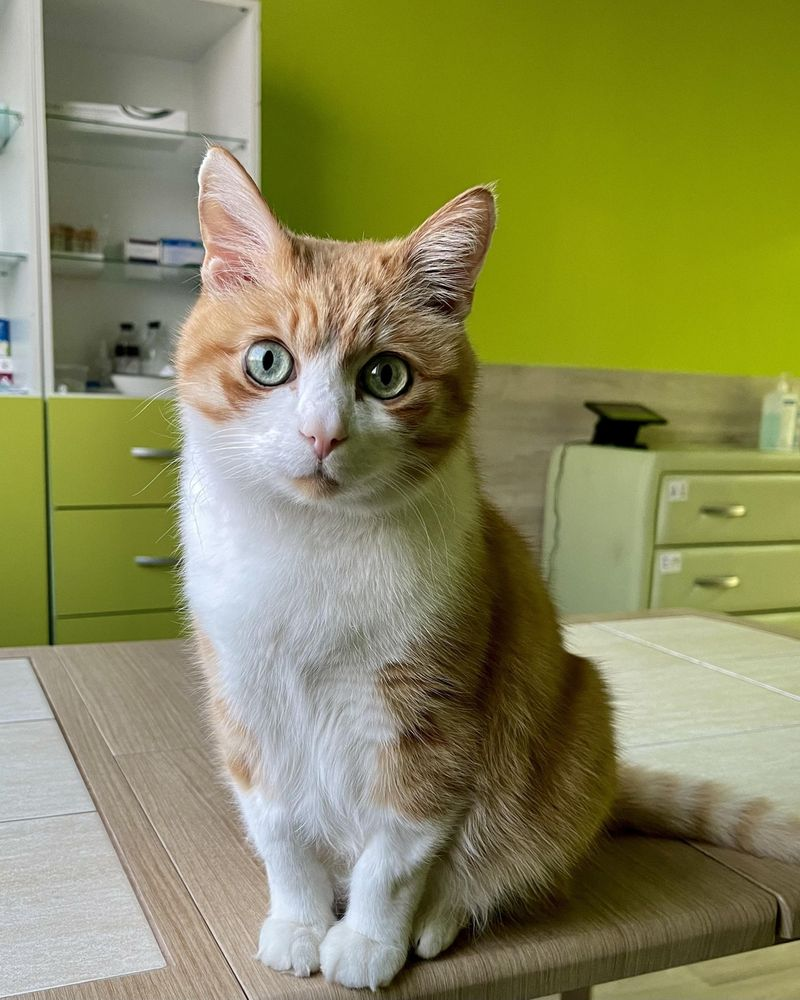
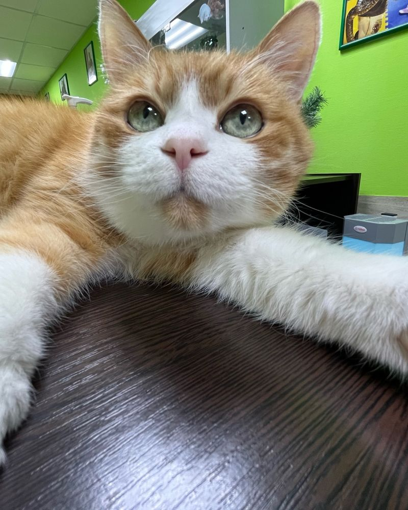
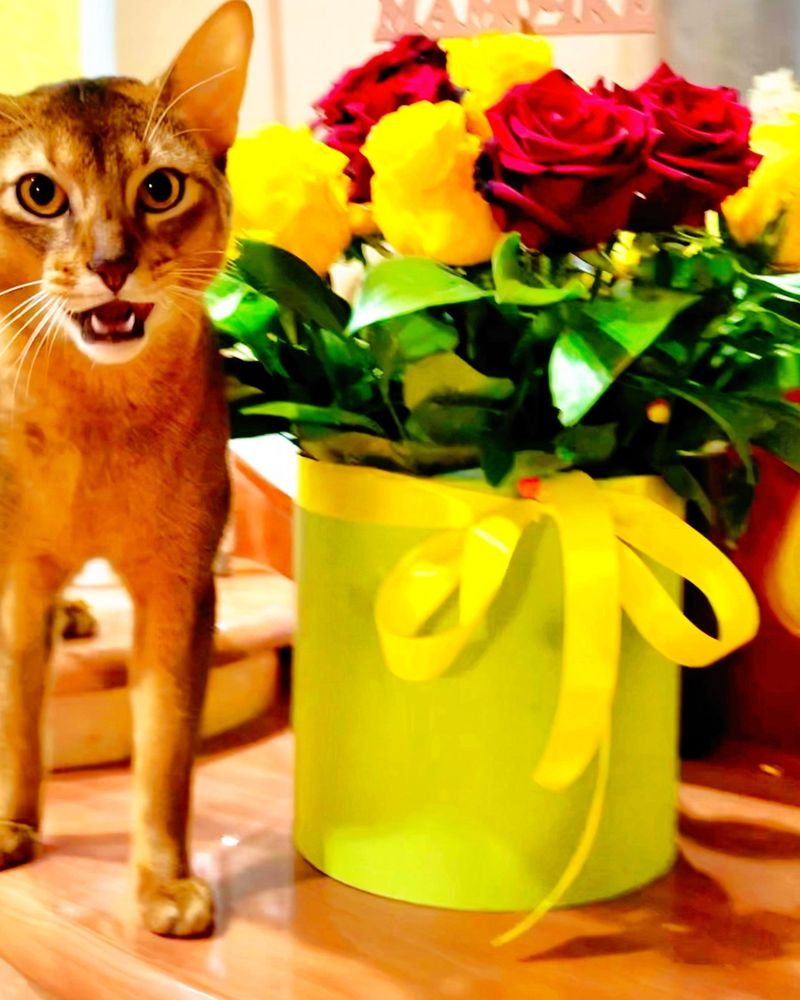
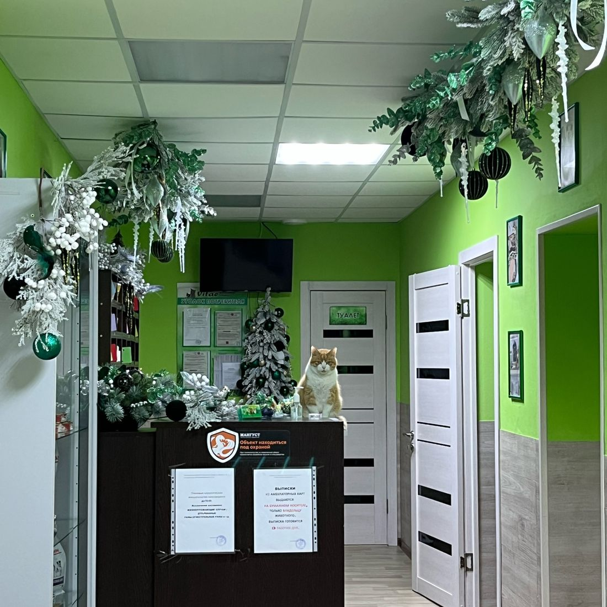
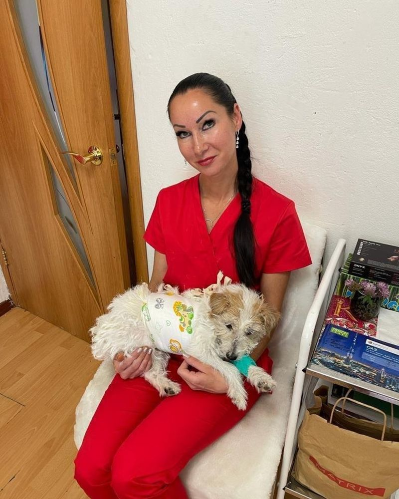
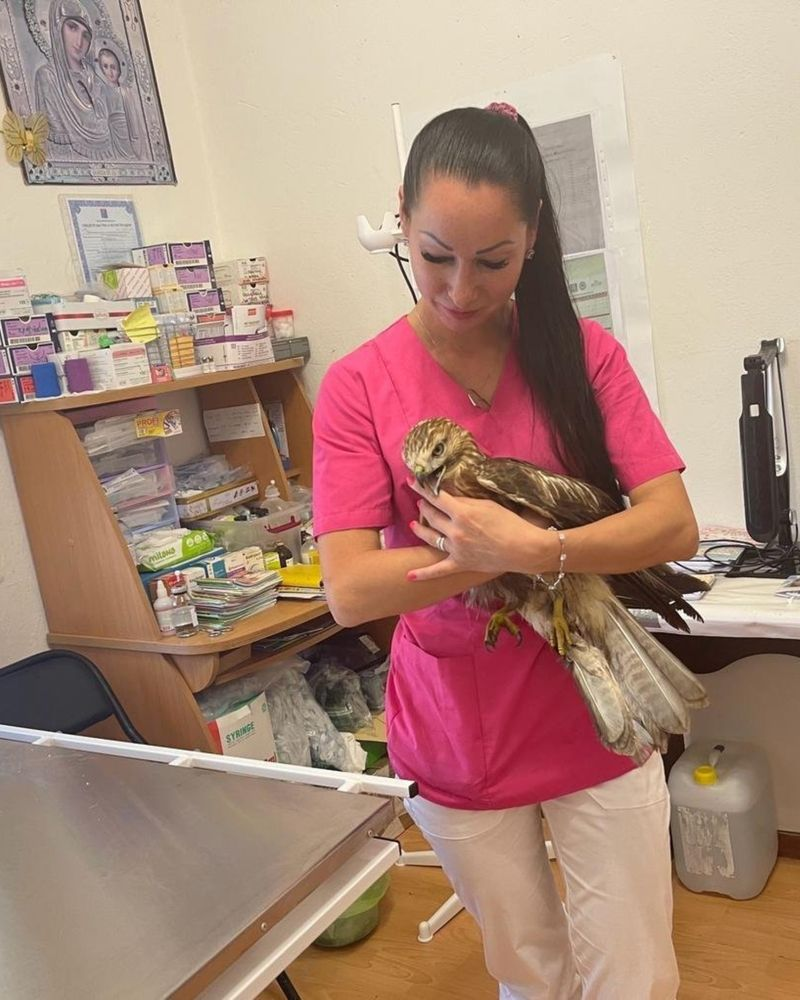

Ветклиникав Магадане



Услуги
Клиника



Как записаться
Напишите или позвоните
Расскажите, что беспокоит питомца, подскажем, когда прийти.
Выберите время
Будни с 9, в выходные с 10 до 16.
Приходите
Арманская, 28, первый этаж.
Магадан,
улица Арманская, 28
улица Арманская, 28
- Время
- Пн-пт с 9:00, сб-вс 10:00-16:00
- Телефон
- +7 924 854-11-15